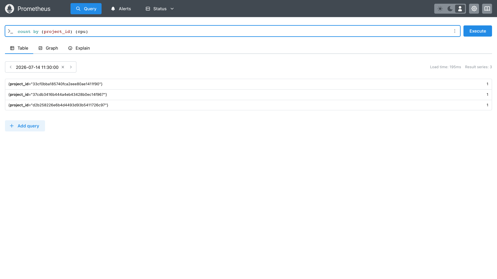

Day 28: 計量管線——誰用了多少¶
Day 27 把租戶結構蓋好了,現在有了分帳的對象。今天處理分帳的依據:部署 Ceilometer,讓「誰開了幾台 VM、跑了多久、用了幾 GB」變成 Day 21 那座 Prometheus 裡查得到的數字。本章要先講清楚一件事——這條管線跟 Day 21 的監控不是同一條,把它們搞混,Day 30 的帳單就永遠算不對。

你在課程的哪裡
監控與計量,不是同一件事¶
這是今天最容易誤會、也最該先講的一段。Day 21 之後,你可能會想:Prometheus 不是已經有一堆指標了嗎?為什麼還要裝 Ceilometer?
因為那兩批資料回答的是不同問題:
| Day 21 的 exporters | 今天的 Ceilometer | |
|---|---|---|
| 誰產生的 | node / libvirt / mysqld exporter | OpenStack 服務本身 |
| 回答什麼 | 這台主機還好嗎 | 這個租戶用了多少 |
| 典型指標 | 主機記憶體剩幾 GB、磁碟水位 | 這顆 VM 屬於哪個 project、開機幾小時 |
| 帶不帶租戶身分 | 不帶 | 帶 project_id |
| 用途 | 維運告警 | 分帳、稽核、容量規劃 |
差別的關鍵在最後兩列。libvirt exporter 知道「這台 hypervisor 上有 12 顆 VM 在跑」,但它不知道哪顆是誰的——那是 OpenStack 資料庫裡的事實,只有 OpenStack 自己說得出來。
flowchart TB
subgraph infra["Day 21:基礎設施指標"]
E["node / libvirt<br/>exporter"]
end
subgraph meter["Day 28:租戶計量"]
C["Ceilometer<br/>(帶 project_id)"]
end
infra ==> P["同一座 Prometheus<br/>(Day 21 建的)"]
meter ==> P
P ==> USE["Day 29 告警<br/>Day 30 帳單"]兩條路平行前進,最後匯進同一座 Prometheus。 這是這門課的設計紅利:Day 21 的地基直接變成 Sprint 5 的計量骨幹,不用為了計費再養一顆資料庫。
Gnocchi 去哪了¶
翻開任何一本 OpenStack 教材,遙測都是三件套:Ceilometer 蒐集 → Gnocchi 儲存 → Aodh 告警。今天的課表卻只有頭尾兩位。
Day 26 已經把判決攤開過:Gnocchi 在 2017 年離開 OpenStack 官方治理後逐漸沉寂,主流發行版的新一代遙測架構已經把它排除在外(截至 2026-07);而官方現行路線是 Ceilometer → Prometheus → Aodh,下一步的 Aetos(在 Prometheus 前面加租戶隔離與 Keystone 認證的代理)更說明方向已定。
所以 Gnocchi 在這門課只以兩種身分出現:歷史脈絡,以及 Aodh 部分告警型別名稱的由來——Day 29 會看到 Heat 至今仍列著三種 OS::Aodh::Gnocchi* 資源型別,和一個 OS::Aodh::PrometheusAlarm 並排。那張清單本身就是這段歷史的化石。
繞過 Gnocchi 有代價,而且代價在 Day 29 會現形:Prometheus 這條路存不住 resource metadata,教科書那套「幫 VM 貼標籤再用標籤圈選機群」的做法直接失效。今天先記著這件事。
原理與架構¶
Ceilometer 用兩種方式取得資料,這決定了今天要動哪些服務:
flowchart TB
subgraph src["資料來源"]
NOTI["各服務發的通知<br/>(開機、刪除…事件)"]
POLL["主動輪詢<br/>(CPU、磁碟…讀數)"]
end
NOTI ==> CN["ceilometer-notification"]
POLL ==> CC["ceilometer-central<br/>ceilometer-compute"]
CN ==> PIPE["pipeline<br/>(publisher 決定送去哪)"]
CC ==> PIPE
PIPE ==>|"push"| PG["Pushgateway :9092"]
PG -.->|"Prometheus 來抓"| PROM["Prometheus :9091"]兩個要點決定今天的雷區:
- 通知那條路要對方配合——Nova、Cinder、Neutron 得先「願意發通知」,而它們預設是關的。這需要動到那些服務,不是裝好 Ceilometer 就有(地雷 3)。
- Ceilometer 是 push,Prometheus 是 pull——兩邊方向相反,中間要塞一個 Pushgateway 當轉接頭。而kolla 不會幫你部署它,得自己起。
Pushgateway 是個妥協,不是好設計
Prometheus 官方文件明講 Pushgateway 不該拿來把 Prometheus 變成推送式系統——它是為「短命的批次任務」設計的。用它接 Ceilometer 是目前 kolla 提供的路,但它有個會直接影響帳單正確性的副作用,見地雷 5。動手前先知道你在用什麼。
步驟¶
步驟 1:起一個 Pushgateway¶
kolla 有 enable_ceilometer_prometheus_pushgateway 這個開關,但它只負責叫 Ceilometer 把資料推去某個位址——那個位址上的服務要你自己準備。
sudo docker run -d --name pushgateway --restart unless-stopped --network host \
quay.io/prometheus/pushgateway:latest --web.listen-address=:9092
兩個參數都是被雷炸出來的:
--network host——kolla 的 docker daemon 設了iptables: false+bridge: none,-p埠映射是死的(地雷 1)。:9092——Pushgateway 預設聽 9091,而那正是 Day 21 kolla Prometheus 的埠(地雷 2)。
教學用 :latest;生產要 pin,而且這個埠是無認證的計費輸入端點
這裡刻意用 :latest 是為了少一個變數,但它不可重現、日後無法稽核「當時到底是哪版」——正好和 Day 22 教的「別把 tag 當不變保證」 自打臉,生產請 pin 到 digest 或明確版本。更重的是:它跑在 host network、完全無認證,餵的卻是 Day 30 的帳單來源——完整的曝險分析見地雷 6。
驗證它活著,並確認兩個服務各據一埠:
curl -s -o /dev/null -w "%{http_code}\n" http://10.0.0.4:9092/-/healthy
sudo ss -tlnp | grep -E ":909[12]"
200
10.0.0.4:9091 users:(("prometheus",pid=10788,fd=6))
*:9092 users:(("pushgateway",pid=1319183,fd=4))
步驟 2:讓 Prometheus 去抓它¶
kolla 支援用檔案片段擴充 Prometheus 的 scrape 設定,不必改動它自己的模板:
sudo mkdir -p /etc/kolla/config/prometheus/prometheus.yml.d
sudo tee /etc/kolla/config/prometheus/prometheus.yml.d/10-pushgateway.yml << 'EOF'
scrape_configs:
- job_name: ceilometer-pushgateway
honor_labels: true
static_configs:
- targets:
- '10.0.0.4:9092'
EOF
honor_labels: true 不能省
Prometheus 抓取時預設會用自己的 job / instance 覆蓋掉指標原本的標籤。Ceilometer 推上來的資料自帶 job="openstack-telemetry",被覆蓋掉的話,後面 Day 30 的 CloudKitty 就對不到它要的東西。這一行保住原始標籤。
步驟 3:部署 Ceilometer¶
sudo tee -a /etc/kolla/globals.yml << 'EOF'
# Day 28:計量管線(Ceilometer → Prometheus,不用 Gnocchi)
enable_ceilometer: "yes"
enable_ceilometer_prometheus_pushgateway: "yes"
ceilometer_prometheus_pushgateway_host: "10.0.0.4"
ceilometer_prometheus_pushgateway_port: "9092"
EOF
source ~/kolla-venv/bin/activate
kolla-ansible deploy -i ~/all-in-one --tags ceilometer,prometheus
三個容器起來(central / compute / notification),Prometheus 也認得新目標了:
步驟 4:打開通知——第一次驗收會失敗¶
檢查 Nova 等服務願不願意發通知:
for s in nova cinder neutron; do
echo -n "$s: "
sudo docker exec ${s}_api grep -A2 "^\[oslo_messaging_notifications\]" /etc/$s/$s.conf | grep driver
done
全是 noop——沒有人在發通知。 --tags ceilometer 只部署了 Ceilometer 自己,不會回頭去改別人的設定(地雷 3)。把會發通知的服務全部重跑一次:
再驗一次:
nova-api driver=messagingv2 topics=notifications
cinder-api driver=messagingv2 topics=notifications
neutron-server driver=messagingv2 topics=notifications
glance-api driver=messagingv2 topics=notifications
步驟 5:產生用量,然後分租戶查¶
開一台 VM 在 Day 27 建的租戶裡:
source /etc/kolla/admin-openrc.sh
openstack server create meter-vm --flavor m1.tiny --image cirros \
--network team-a-net --wait
等一兩分鐘讓輪詢跑過,直接看 Pushgateway 收到什麼:
compute_instance_booting_time{...} 13.29833
cpu{instance="",job="openstack-telemetry",project_id="…",resource_id="…",user_id="…"} 6.777e+10
disk_device_read_bytes{...} 2.877696e+07
disk_device_read_requests{...} 1035
disk_device_write_bytes{...} 7.303168e+07
指標叫 cpu,不是 ceilometer_cpu——名稱沒有服務前綴,照著猜會什麼都查不到(地雷 4)。
最後是今天真正的驗收。這一條查詢就是 Day 30 帳單的全部基礎:
PW=$(sudo grep '^prometheus_password:' /etc/kolla/passwords.yml | awk '{print $2}')
curl -s -u admin:$PW --get http://10.0.0.4:9091/api/v1/query \
--data-urlencode "query=count by (project_id) (cpu)"
project_id=33cf0bba…(admin) → 1 台
project_id=37cdb341…(Trove) → 1 台
project_id=d2b25822…(team-a) → 1 台 ← Day 27 建的租戶
同一條查詢在 Prometheus 的畫面上長這樣——右上角 Result series: 3,三個 project_id 各一台:

雲說得出每個租戶各有幾台機器了。 縮到單一租戶也對:
curl -s -u admin:$PW --get http://10.0.0.4:9091/api/v1/query \
--data-urlencode 'query=cpu{project_id="d2b258226e6b4d4493d93b5411726c97"}'
那個 project_id label 就是 Sprint 5 後半段的命脈:它讓 Day 29 的告警圈得出範圍、讓 Day 30 的帳單分得出租戶——全部不需要 Gnocchi。
為什麼今天沒有主控台畫面?
前幾天每個服務都有 Skyline 或 Horizon 的頁面可看,今天沒有——因為 Ceilometer 根本沒有介面。
這不是 kolla 沒開,是這個服務就沒有面板。看 kolla 的 horizon role 怎麼列各服務就懂了:
- { name: "ceilometer", enabled: "{{ enable_ceilometer_horizon_policy_file }}" } # 只有政策檔
- { name: "cloudkitty", enabled: "{{ enable_horizon_cloudkitty }}" } # 有面板
- { name: "designate", enabled: "{{ enable_horizon_designate }}" } # 有面板
Ceilometer 那列只有政策檔,沒有面板;Day 29 的 Aodh 更是連一列都沒有。
這其實很合理:Ceilometer 是一隻沒有 API 的背景收集器,它的產出就是 Prometheus 裡的時間序列——上面那張 Prometheus 畫面就是它的介面。真正給人看的畫面在 Day 30:CloudKitty 把這些數字變成帳單之後,Horizon 才有東西可以顯示。
驗收 checkpoint¶
逐項驗證,全部符合判準才算完成今天:
| 驗證 | 判準 | 本課環境的結果 |
|---|---|---|
| Pushgateway | :9092 健康檢查回 200,與 Prometheus 的 9091 不衝突 |
兩者並存 |
| Prometheus 目標 | ceilometer-pushgateway 這個 job 為 up |
up(總 targets 38) |
| Ceilometer 容器 | central / compute / notification 全起來 | 符合 |
| 通知已開 | nova/cinder/neutron 的 driver 為 messagingv2 |
重跑後符合(見地雷 3) |
| 資料進來 | Pushgateway /metrics 有 job="openstack-telemetry" 的指標 |
48 行 |
| 分租戶計量 | count by (project_id) (cpu) 查得到各租戶 |
3 個 project,含 team-a |
地雷記錄¶
地雷 1:kolla 的 docker 沒有 iptables,-p 是死的¶
症狀:第一次用標準寫法起 Pushgateway:
容器 Up,健康檢查卻是:
根因:kolla 的 docker daemon 設了 iptables: false + bridge: none。埠映射(-p)靠的正是 docker 寫 iptables 規則——這兩個關掉,-p 完全失效,而且不會報錯,只是沒人在聽。
解法:跟 kolla 自己的容器一樣走主機網路。
sudo docker run -d --name pushgateway --restart unless-stopped --network host \
quay.io/prometheus/pushgateway:latest --web.listen-address=:9092
教訓:在 kolla 主機上自己跑容器,一律 --network host,埠用參數指定而不是用 -p 映射。這是 kolla 的網路設計(它把網路完全交給主機)必然的長尾效應,在這台機器上會一犯再犯。
地雷 2:Pushgateway 預設 9091,正好撞上 kolla 的 Prometheus¶
已在步驟 1 預拆。Pushgateway 官方預設埠是 9091,而 Day 21 記過 kolla 把 Prometheus 放在 9091(不是慣例的 9090)——兩個 9091 對撞。
這是本課程的老主旋律了:Day 14 的監控套件、Day 15 的 port 80、今天的 9091。在同一台機器上堆越多服務,「預設埠相撞」就從意外變成常態——裝任何新東西之前,先 ss -tlnp 看一眼。
地雷 3:--tags ceilometer 不會回頭打開別人的通知¶
症狀:Ceilometer 三個容器全部健康、log 沒有任何錯誤、pollster 也確實在跑,但通知那條路一筆資料都沒有。查下去發現 nova/cinder/neutron 的 oslo_messaging_notifications driver 全是 noop。
根因:Ceilometer 的通知來源是別的服務發出來的訊息。enable_ceilometer 會讓 kolla 在下次部署那些服務時把它們的 driver 改成 messagingv2——但 --tags ceilometer 只跑 Ceilometer 自己的 role,那些服務根本沒被碰到,設定檔停在舊版。
解法:把所有會發通知的服務重跑一次。
教訓:這是 Day 22 那顆「--tags 的檢查盲區」的同族,而且更陰險——Day 22 那顆至少會在部署時失敗,這顆部署全綠、服務全健康、log 全乾淨,只是資料默默不來。
通則:當某個開關的效果跨越服務邊界(A 服務開了,要 B 服務配合),--tags A 一定不夠。開之前先問一句:這個 flag 會改到誰的設定檔?
地雷 4:指標名稱沒有 ceilometer_ 前綴¶
症狀:VM 開好了、pollster 在跑、pipeline 的 publisher 也對:
但這樣查,連續十次都是 0:
根因:問題出在 grep,不在管線。 Ceilometer 推出來的指標就叫 cpu、memory_usage、disk_device_read_bytes,沒有任何前綴。管線從頭到尾都是好的,只有我的假設是錯的。
解法:別假設名字,把原始輸出直接看一遍:
教訓:這顆的教訓不是關於 Ceilometer,是關於除錯姿勢。「查不到」有兩種可能:東西不在,或你問錯問題。而錯的問題問十次還是錯的。當一個查詢回傳空值時,先確認那個查詢本身是對的——最快的方法是把過濾條件全部拿掉,看看原始資料長什麼樣。這一招在 Day 29 會再救一次命。
地雷 5:Pushgateway 永遠記得已經刪掉的機器¶
症狀:Prometheus 裡有一筆 vcpus 指標,拿它的 resource_id 去查:
這台 VM 早就被刪了,它的指標卻還在,而且會一直在。
根因:Pushgateway 的設計就是保存最後一次推送的值,直到被覆蓋或明確刪除。它是為「跑完就消失的批次任務」設計的——任務死了,值還要留著給 Prometheus 抓。用在計量上,這個特性變成:VM 刪掉之後,它最後的讀數永遠留在那裡。
影響:對 Day 30 的帳單來說,這代表可能對不存在的機器持續收錢。本課環境的帳單之所以沒被汙染,是因為 CloudKitty 用 max_over_time(...[1h]) 這種帶時間窗口的查詢——窗口滑過去之後,舊資料就落在窗外了。但如果你用的是 instant query(count(cpu) 這種),幽靈機器會直接算進去。
教訓:這是整條管線最根本的設計債,而它來自一個用途錯配——Prometheus 官方文件明確說 Pushgateway 不該拿來當推送式監控的通用轉接頭,而 kolla 的 enable_ceilometer_prometheus_pushgateway 就是這樣用的。這不是 kolla 的錯,是 push 型計量硬要接上 pull 型監控的必然代價,也正是官方推 Aetos 想解決的問題之一。
實務上要記得:計費查詢一律帶時間窗口,別用 instant query;定期清理 Pushgateway(DELETE /metrics/job/openstack-telemetry/...)也是一種辦法,但要小心別刪到還在用的。
地雷 6:無認證、可寫的計費輸入端點¶
問題:步驟 1 起的 Pushgateway 跑在 host network 的 :9092、沒有任何認證,而它正是 Day 30 帳單的資料來源。Pushgateway 的 API 本來就是「誰都能 POST 一筆指標進去」——放在計費鏈的入口,就成了破口:
- 可讀:任何搆得到這個埠的人
curl .../metrics就拿到全租戶的用量(哪個 project 開了幾台、跑多久),連resource_id、project_id都在裡面。 - 可寫:同一個埠能
POST假指標——低報自己的用量少付錢、灌爆對手的帳單、注入根本不存在的幽靈機器。帳單是拿這些數字積分出來的,汙染源頭等於偽造帳單。
為什麼 lab 沒事、多節點會出事:單機時 10.0.0.4:9092 只有本機搆得到;一旦多節點、或計算節點與租戶網路可路由到它,曝險面就打開了。對照 Day 21:kolla 自己的 Prometheus 是有 basic auth 的,這個轉接頭卻沒有——這個不對稱課程先前沒點破。
修法:把 Pushgateway 綁到只有 Prometheus 搆得到的內部位址、或擋在有認證的反向代理後面;pin 住 image 版本(見步驟 1 的 note);多節點部署前把「誰能讀/寫這條計費鏈」當成威脅模型的一部分。這是 Day 27 [oslo_limit] 手寫覆寫、Day 32 VIP unit、Day 34 config.json 手改 之外,另一筆「lab 便宜省略、prod 要補」的債。
帶得走的東西¶
- 監控與計量回答的是不同問題,差別在「帶不帶身分」。 exporter 知道機器上有 12 顆 VM,但不知道哪顆是誰的;租戶歸屬只有 OpenStack 自己說得出來,這就是 Ceilometer 存在的理由。
- 當一個開關的效果跨越服務邊界,
--tags A一定不夠。 開之前先問:這個 flag 會改到誰的設定檔?改到別人的,就要把別人也重跑一次。 - 查詢回空有兩種可能:東西不在,或你問錯問題。 先把過濾條件全部拿掉看原始資料,再回頭修查詢——這比連問十次同一個錯問題快。
- Pushgateway 記得所有推送過的東西,包括已經不存在的資源。 push 型計量硬接 pull 型監控,這是必然的代價;計費查詢一律帶時間窗口。
- 背景服務沒有畫面是設計,不是缺漏。 計量給機器讀,帳單才給人看。
延伸閱讀¶
想往下深挖,從這幾份開始:
- Ceilometer 官方文件 —— 計量、pipeline、publisher 的完整概念;
polling.yaml與pipeline.yaml的權威說明。 - Kolla-Ansible 的 Ceilometer 指南 —— 本章 globals 設定的官方對照。
- Prometheus Pushgateway:什麼時候不該用它 —— 官方親自說明 Pushgateway 的正確用途與陷阱;本章地雷 5 的理論出處。
- Aetos(遙測的下一步) —— 在 Prometheus 前面加租戶隔離與 Keystone 認證的官方代理;Day 26 判定「方向已定」的證據之一。
下一步¶
雲說得出誰用了多少了。Day 29 讓這些數字產生後果:Aodh 盯著它們,超標時叫 Heat 自己加機器——順便補完 Day 5 沒教的 autoscaling。